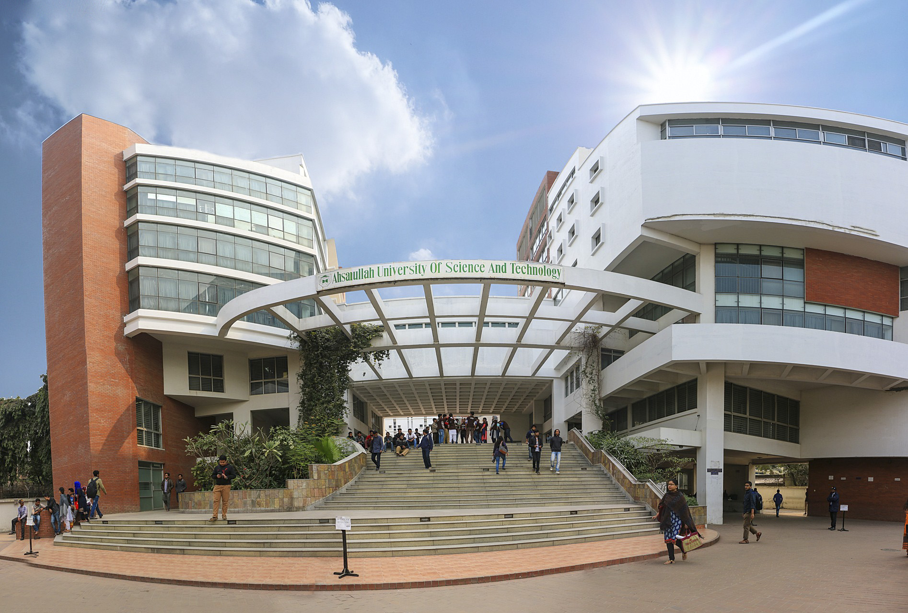
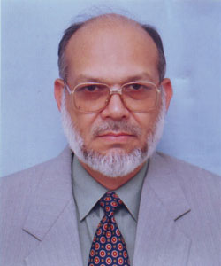

AHSANULLAH UNIVERSITY OF SCIENCE AND TECHNOLOGY
Home
Admission
Academic
Faculties and Departments
Academic Rules and Information
Examination & Grading System
Research & Publications
Academic Calendar
Lab Facilities
Tuition & Fees
List of Faculty Members
Administration
Campus
Programs
Faculty of Engineering
B.Sc in CSE
B.Sc in EEE
B.Sc in Civil
B.Sc in Textile
Faculty of Architecture and Planning
B.Sc in Architecture
Faculty of Business and Social Sciences
B.Sc in Business Administration
M.Sc in Business Administration
Faculty of Education
Master of Education
About
Contact
Search

Chancellor
H.E. Mr. Mohammed Shahabuddin
Honourable President of the People's Republic of Bangladesh

Chairman , Board of Trustees
Mr. Kazi Rafiqul Alam
President, Dhaka Ahsania Mission
FEATURED LINKS
ABOUT AUST
The Ahsanullah University of Science and Technology (AUST) was founded by the Dhaka Ahsania Mission in 1995. Dhaka Ahsania Mission is a non-profit voluntary organization in Bangladesh. The Mission was established in 1958 by Khan Bahadur Ahsanullah, an outstanding educationist and social reformer of undivided India. With his own vision of a better society, characterized by a wealth of moral and spiritual values of the highest humanism that are universally acclaimed through ages and manifested in every sphere of life social, economic and cultural; and access to education and resources..